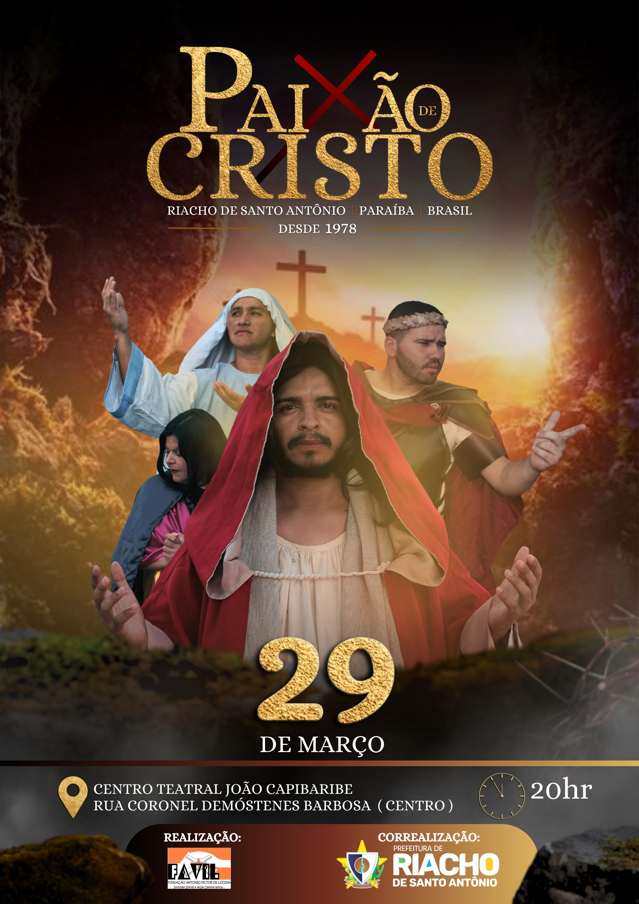

História
A Paixão de Cristo de Riacho de Santo Antônio é uma peça teatral que teve início no ano de 1978, e conta a história de Jesus. A grande história de fé, esperança e emoção é contada por mais de 200 atores da cidade em seus monumentais palcos, com cenários grandiosos, como o Palácio de Herodes, o Fórum de Pilatos, o Templo de Jerusalém entre outros. Em pouco mais de duas horas,
Orealismo que brota nas cenas, na fisionomia e nos trajes dos personagens comovem a plateia de aproximadamente 2.000 mil pessoas. Todo espetáculo fica por conta da produção (iluminação, sonorização, pirotecnia, figurinistas, direção, marketing entre outros). Contando com o apoio financeiro da FAVIL, PMRSA e dos patrocinadores que dão todo suporte para fazer o espetáculo acontecer.
Evento
A Paixão de Cristo da cidade de Riacho de Santo Antônio é o maior espetáculo ao ar livre da Paraíba. Repassando para o público momentos de fé e espiritualidade, este evento atrai turistas de todos os lugares da Paraíba e de todo Brasil. Fantásticos efeitos de sonorização e iluminação contribuem para a “Paixão de Cristo” se tornar um inesquecível espetáculo que a cada ano se consolida uma história cultural do Brasil, da Paraíba e do município de Riacho de Santo Antônio.
O Projeto tem iniciativa da FAVIL e conta com apoio de todos os envolvidos. Nos últimos anos, a Prefeitura Municipal de Riacho de Santo Antônio vem sendo a co-realizadora do evento, onde fomenta o setor cultural do município e contribui de forma geral com o desenvolvimento da economia da cidade. Vale ressaltar a importância desse movimento cultural para o município com menos de 3 mil habitantes, pois o mesmo é o berço do patrimônio histórico cultural do cariri paraibano, em geral, deve ser preservado por representar uma riqueza cultural para a cidade de Riacho de Santo Antônio.
Data
 class="data">Local
Patrocinadores